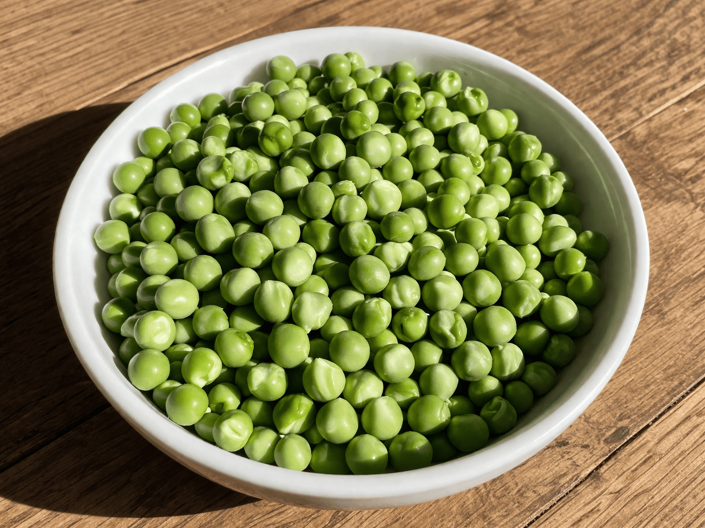

Ingrédients de la recette
Préparation détaillée
⏱ 30 minCommencez par préparer tous les ingrédients : émincez l’oignon, épluchez si besoin les petits oignons, sortez les lardons, préparez les petits pois et gardez le bouillon chaud à portée de main.
Faites chauffer une grande sauteuse ou une cocotte à feu moyen, puis ajoutez les lardons fumés. Laissez-les revenir quelques minutes jusqu’à ce qu’ils soient bien dorés et qu’ils rendent leur gras parfumé.
Ajoutez l’oignon émincé dans la cocotte avec les lardons. Faites-le suer doucement pendant 2 à 3 minutes, jusqu’à ce qu’il devienne translucide et légèrement fondant.
Incorporez les petits pois, les petits oignons grelots et, si tu le souhaites, quelques rondelles de carottes. Mélangez bien pour enrober les légumes du jus de cuisson.
Versez le bouillon chaud, ajoutez le bouquet garni, puis assaisonnez légèrement avec du sel et du poivre. Goûtez toujours avant de resaler, car les lardons apportent déjà du goût.
Couvrez et laissez mijoter à feu doux pendant environ 15 minutes. Les petits pois doivent devenir tendres sans perdre toute leur tenue, et le jus doit doucement se concentrer.
Pendant ce temps, faites dorer les cuisses de caille dans une poêle avec un peu de beurre ou un filet d’huile. L’objectif est d’obtenir une belle coloration extérieure tout en gardant une chair moelleuse.
Déposez les cailles sur les petits pois juste avant de servir, ou laissez-les finir quelques minutes dans la cocotte pour que les saveurs se mélangent. Servez bien chaud avec le jus de cuisson par-dessus.
Accompagnements & Herbes
Sélection : Aucune
Idées pour accompagner le plat
- Version classique : quelques pommes de terre grenailles rôties au four.
- Version plus raffinée : un filet de vin blanc pour déglacer la cocotte.
- Version encore plus gourmande : quelques champignons poêlés ajoutés en fin de cuisson.
- Finition fraîche : un peu de persil ciselé juste avant de servir.
Checklist
0 / 6
Gestion de la cuisson
Choisis le temps selon l’étape que tu es en train de faire :